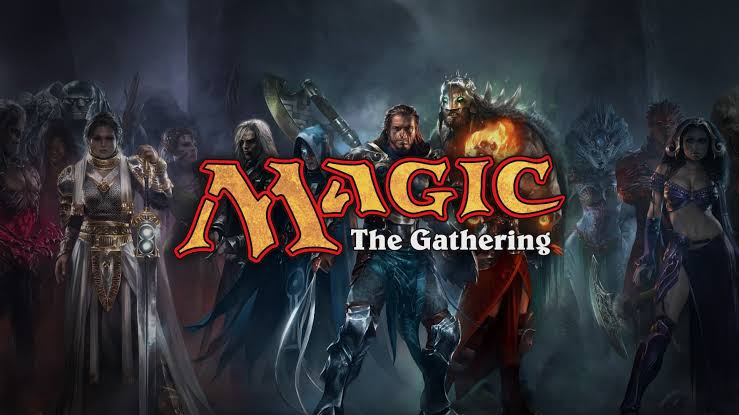

About My Interests
This webpage is to go into detail on what my current interests and hobbies are when I have free time.
Video Games
Video games are one of my hobbies outside of class. Some video games I currently play are:
- Fire Emblem: Fortune's Weave
- Planet Zoo 2
- Overwatch
- Fortnite

Anime
I enjoy watching anime, while I am not gaming or doing school work. Some of my favorite anime of all time are listed below:
- Angel Beats
- Re:Zero
- Cells at Work!!!
- Konosuba

Magic: The Gathering
I enjoy playing Magic: The Gathering, especially the Commander format. Building decks gives me a chance to explore different themes and combinations of cards. It also taps into my CS brain a bit because the game makes me think of sequencing and how each play will affect a future one.
